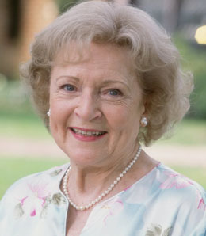

<!doctype html>
<!DOCTYPE html>
<html>

</body>
</html>
<head>
<title>Wendy G. Bite Abpout Me</title>
<meta property="og:title" content="Wendy G. Bite" />
<link rel="stylesheet" type="text/css" href="styles/styles.css">
</head>
<body>
<div class="bg">
	<div class="content">
	<div class="title">
	<h1 class="name">
		Wendy G. Bite
	</h1>
		<nav class="links">
			<a class="about" href="index.html">About Me<a class="resume" href="resume.html">Resume</a>
		</nav>
	
</div>
		
			<article class="bod">
				<section class="text">
				<h1 class="aboutme">About Me
				</h1>

				<p class="sum">
				
				The series revolves around four older, single women (three widows and one divorcée) sharing a house in Miami, Florida. The owner of the house is a widow named Blanche Devereaux (Rue McClanahan), who was joined by fellow widow Rose Nylund (Betty White) and divorcée Dorothy Zbornak (Bea Arthur). They both responded to a room-for-rent ad on the bulletin board of a local grocery store. In the pilot episode, the women had a gay cook named Coco (Charles Levin), who was subsequently removed.[5] The three were soon joined by Dorothy's mother, Sophia Petrillo (Estelle Getty), after the retirement home where she lived, Shady Pines, burned down.</p>
					
				<p class="sum">
				Thank You for being a friend. Travel down a road and back again. Your heart is true, you're a pal and a confidante.And if you threw a party, invited everyone you knew, you would see the biggest gift would be from me and the card attached would say, Thank You For Being a Friend!
				</p>
				</section>

			</article>
		<footer>
			<nav class="footer">
				
				<a class="first" href="">Facebook</a> <a href="">Twitter</a> <a href="">Instagram</a> <a href="">Linkedin</a>
			
			</nav>
		</footer>
		</div>
</div>
</body>
</html>
